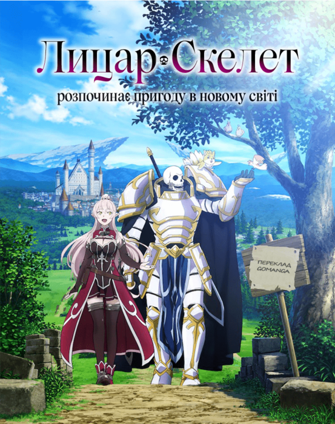

Лицар-Скелет
Головний герой заснув під час онлайн-гри. Однак він прокинувся в дивному світі в тілі свого ігрового персонажа. У стані шоку він помітив, що на ньому немає нічого, крім його найсильнішої зброї та обладунків. Що ще гірше, зовнішність...